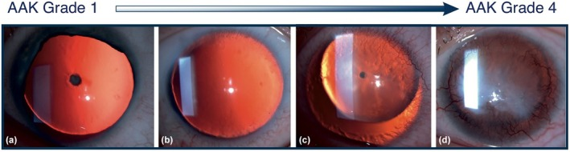
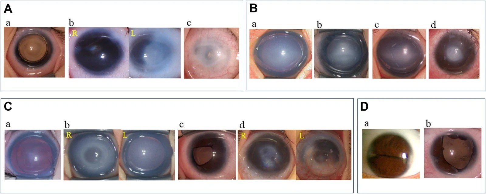
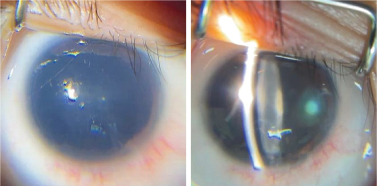
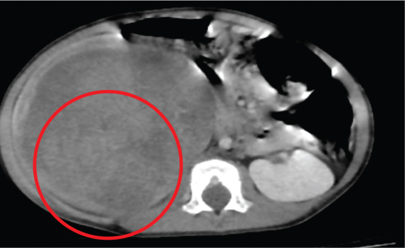
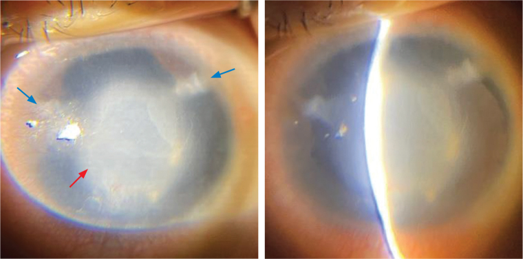

6104 — Aniridia bẩm sinh & hội chứng WAGR: mắt, gen 11p13 và tầm soát Wilms / Congenital aniridia and WAGR syndrome
Tags: pattern:aniridia pattern:glaucoma pattern:khoi-than vung:mat vung:o-bung-nhi score:WAGR-surveillance protocol:US-3-thang incidentaloma:o-nguyen-bao-than
Mức chắc chắn (certainty): tổng hợp y văn (literature synthesis) + ca nguyên văn (verbatim case) — ca WAGR có aniridia và glaucoma (Lim-Tanjutco PA, Yap-Veloso MIR, Acta Med Philipp 2026, PMC13281451) đối chiếu GeneReviews PAX6/WAGR, đoàn hệ SIOP-RTSG WAGR (Hol JA et al., Cancer 2021, PMC7894534) và bài tổng quan AAK 2026 (PMC13460364).
1. Tổng quan — vì sao "không thấy mống mắt" lại là bệnh hệ thống
- Aniridia là thiểu sản (hypoplasia), không phải mất hoàn toàn mống mắt. Mống mắt còn lại một gờ gốc (iris root remnant) — vì thế đáy mắt trông "đen thẳm" nhưng vẫn có mô mống mắt ở góc tiền phòng. Tần suất 1/40.000–1/100.000; khoảng 2/3 ca có tiền sử gia đình (di truyền trội NST thường), 1/3 do đột biến mới.
- TẠI SAO: gen PAX6 (11p13) là yếu tố phiên mã chủ đạo cho phát triển mắt. Một bản gen (haploinsufficiency) đủ gây:
- thiểu sản mống mắt và dính/góc tiền phòng kém phát triển → glaucoma;
- thiểu sản hố hoàng điểm (foveal hypoplasia) — gần như toàn bộ bệnh nhân — → rung giật nhãn cầu (nystagmus), giảm thị lực, sợ ánh sáng;
- thiểu sản gai thị, đục thể thủy tinh, và thiếu hụt tế bào gốc vùng rìa (limbal stem cell deficiency) → bệnh giác mạc do aniridia (aniridia-associated keratopathy — AAK).
- WAGR = mất đoạn liên tiếp 11p13 gồm PAX6 và WT1. Đây là lý do một bệnh nhân "chỉ khám mắt" lại phải tầm soát u nguyên bào thận (Wilms tumor — WT). Tần suất WAGR 1/500.000–1/1.000.000; nguy cơ WT 45–60%, tuổi trung vị 22 tháng (6–44 tháng), 37,5% hai bên, 78,9% có ổ nguyên bào thận; u đối bên muộn có thể xuất hiện tới 7 năm sau chẩn đoán (Hol JA et al., PMC7894534).
- Glaucoma trong aniridia tới 75%, theo hai cơ chế: bất sản góc bẩm sinh (nhũ nhi) và góc đóng tiến triển do gờ mống mắt/góc hẹp về sau. Vì vậy nhãn áp bình thường lúc sinh KHÔNG loại trừ glaucoma — phải đo lại nhiều lần.
- Thị lực trung bình rất kém: WAGR 20/500 ở mắt tốt hơn, so với 20/125 ở aniridia không hội chứng (Lim-Tanjutco 2026). Phần lớn giảm thị lực do thiểu sản hố hoàng điểm, không chỉ do glaucoma.
- AAK (Lagali độ 1–4): bắt đầu bằng pannus giác mạc/khô mắt, tiến tới mờ giác mạc, sẹo, tân mạch; gần như mọi bệnh nhân có biểu hiện khi trưởng thành. Phẫu thuật (nhất là mổ glaucoma/cataract) có thể làm AAK nặng lên — phải cân nhắc trước mỗi can thiệp.
- Vì sao hình ảnh học quan trọng: AS-OCT/UBM đo gờ mống mắt, độ mở góc, độ dày giác mạc khi giác mạc còn trong; OCT hoàng điểm chứng minh mất hố hoàng điểm (các lớp võng mạc trong còn liên tục) — giải thích rung giật nhãn cầu mà không cần "đoán mù". Siêu âm bụng là phần không thể thiếu của cùng một bệnh cảnh.

Thang Lagali: (a) độ 1 — pannus nhẹ; (b) độ 2 — mờ giác mạc lan; (c) độ 3 — tân mạch và mờ đậm; (d) độ 4 — giác mạc đục hoàn toàn, không còn thấy chi tiết tiền phòng. Ảnh: Szentmáry N et al., Acta Ophthalmol 2026;104:604–615 (PMC13460364, Fig. 1), CC BY 4.0.2. Mẫu hình + chẩn đoán phân biệt theo vị trí (Gamut)
- Mẫu hình 1 — "gần như không thấy mống mắt":
- Aniridia bẩm sinh (PAX6): hai bên, đồng tử rất rộng, thiểu sản hố hoàng điểm, rung giật nhãn cầu, sợ ánh sáng.
- Coloboma mống mắt: khuyết hình chìa khóa, thường inferonasal, một bên; phần còn lại của mống mắt bình thường; không có thiểu sản hố hoàng điểm đi kèm.
- Axenfeld–Rieger (PITX2/FOXC1): vòng cung sau giác mạc (posterior embryotoxon), dải mống mắt bám vào góc, loạn sản góc; mống mắt có thể thiểu sản nhưng không mất gần toàn bộ.
- Peters anomaly: dính trung tâm giác mạc–mống mắt/thể thủy tinh, đục giác mạc trung tâm từ nhỏ.
- ICE syndrome (iridocorneal endothelial): một bên ở người trưởng thành, corectopia, mống mắt teo "búa bạc", dính góc — không phải bệnh nhi.
- Chấn thương/iatrogenic, viêm màng bồ đào dính mống mắt: tiền sử rõ; mống mắt bị kéo dính, không thiểu sản đối xứng hai bên.
- Bạch tạng (albinism): mống mắt vẫn thấy được nhưng trong suốt, chiếu sáng xuyên; không có khuyết mống mắt thật.
- Mẫu hình 2 — "aniridia + khối thận":
- WAGR (mất đoạn 11p13): aniridia + WT/ổ nguyên bào thận + bất thường sinh dục + chậm phát triển.
- Denys–Drash (WT1 exon 8/9): bệnh thận màng trong, DSD 46,XY, WT; không có aniridia — nhưng cùng nhóm WT1.
- Frasier (WT1 intron 9): DSD 46,XY, gonadoblastoma, WT muộn hơn; không aniridia.
- Mất đoạn WT1 đơn thuần: WT hai bên/nguy cơ cao, không aniridia.
- Mẫu hình 3 — "aniridia + chậm phát triển": WAGR; WAGRO (WAGR + béo phì, mất đoạn lớn hơn); Gillespie syndrome (ITPR1, một số ca PAX6) — aniridia + thất điều tiểu não, không có WT.
- Mẹo nhớ WAGR: Wilms, Aniridia, Genitourinary malformation, Retardation of mental development — nay dùng chậm phát triển (developmental delay) thay cho "retardation".

Cùng một "kiểu hình aniridia" nhưng do nhiều gen: A — PAX6: (a) aniridia + glaucoma, (b) Axenfeld + Peters, (c) Peters; B — CYP1B1: aniridia/Peters kèm glaucoma; C — FOXC1: aniridia, Peters, Axenfeld; D — PITX2: Axenfeld hai bên. Bài học: không được gọi "aniridia" là một bệnh duy nhất — hình thái tiền phòng + gen quyết định nguy cơ glaucoma và hướng tầm soát. Ảnh: Nishina S et al., Ophthalmol Sci 2026;6:101339 (PMC13524468, Fig. 2), CC BY 4.0.3. Bảng so sánh phân biệt (ma trận đối chiếu)
| Thực thể (entity) | Hình ảnh điển hình (AS-OCT/UBM, đáy mắt, bụng) | Chốt vào (rule-in) | Chốt loại (rule-out) | Gợi ý xác nhận |
|---|---|---|---|---|
| WAGR (11p13 deletion) | Aniridia hai bên gần toàn bộ; OCT: mất hố hoàng điểm; siêu âm: khối thận đặc, có thể hai bên; ổ nguyên bào thận giảm âm | Aniridia + bất thường sinh dục/chậm phát triển + khối thận; mất đoạn PAX6 + WT1 | Aniridia đơn độc, không khối thận, gen PAX6 đơn thuần → không phải WAGR | CMA/MLPA 11p13, WT1 sequencing; siêu âm bụng mỗi 3 tháng |
| Aniridia đơn thuần (PAX6) | Aniridia hai bên, thiểu sản hố hoàng điểm, không khối thận | Đột biến PAX6, không mất WT1; WT risk thấp | Mất đoạn 11p13 lan tới WT1 → WAGR | PAX6 sequencing + MLPA; siêu âm bụng theo tuổi |
| Gillespie syndrome | Aniridia + thất điều tiểu não, chậm phát triển; không khối thận | ITPR1 (hoặc PAX6 hiếm); khám thần kinh bất thường | Không có thất điều, không chậm phát triển → aniridia đơn thuần | Gen ITPR1/PAX6; MRI tiểu não |
| WAGRO | WAGR + béo phì sớm; mất đoạn lớn hơn | Béo phì + WAGR; mất đoạn lan rộng | WAGR không béo phì | CMA toàn hệ gen |
| Denys–Drash / Frasier (WT1) | Không aniridia; bệnh thận màng trong/DSD; khối thận | WT1 missense/splice + bệnh thận + DSD | Có aniridia → nghĩ WAGR/PAX6, không phải DDS đơn thuần | WT1 sequencing; sinh thiết thận; eGFR |
| Coloboma mống mắt | Khuyết hình chìa khóa inferonasal, một bên; hố hoàng điểm bình thường | Khuyết khu trú + bờ mống mắt liên tục | Thiểu sản toàn bộ hai bên + rung giật → aniridia | Soi đáy mắt, OCT hoàng điểm; tầm soát coloboma thị thần kinh |
| Axenfeld–Rieger | Posterior embryotoxon, dải mống mắt, loạn sản góc; có thể glaucoma | Vòng cung sau giác mạc + dải mống mắt | Không có vòng cung sau, mống mắt mất gần toàn bộ → aniridia | Gen PITX2/FOXC1; AS-OCT góc |
| ICE syndrome | Một bên, corectopia, mống mắt teo, dính góc; người lớn | Một bên + corectopia + bề mặt nội mô "búa bạc" | Hai bên, trẻ em → aniridia bẩm sinh | Soi giác mạc đồng tử, AS-OCT; không có chỉ định tầm soát WT |
- Phân biệt cốt lõi: aniridia = hai bên + thiểu sản hố hoàng điểm + rung giật nhãn cầu; coloboma = một bên + khuyết khu trú; WAGR = aniridia + bất thường sinh dục/chậm phát triển + nguy cơ WT 45–60%.
4. Protocol chụp/đánh giá + hệ phân độ & sơ đồ quyết định
- Khám mắt trẻ dưới gây mê (examination under anesthesia — EUA) khi nghi aniridia:
- Nhãn áp: Perkins hoặc iCare; đo cả hai mắt, lặp lại vì giác mạc mờ/độ dày giác mạc ảnh hưởng số đo.
- Đường kính giác mạc (caliper): ca WAGR trong bài có 10,5 mm — nhỏ hơn bình thường (microcornea nhẹ).
- Sinh hiển vi đèn khe: gờ mống mắt, độ sâu tiền phòng, thể thủy tinh, AAK (Lagali 1–4).
- Gonioscopy nếu giác mạc trong; UBM nếu giác mạc đục — đánh giá góc, gờ mống mắt, mỏm thể mi.
- AS-OCT đo gờ mống mắt/độ mở góc; OCT hoàng điểm tìm mất hố hoàng điểm; siêu âm B nếu không thấy đáy mắt.
- Khúc xạ/đo thị lực theo tuổi; đánh giá rung giật, sợ ánh sáng.
- Theo dõi mắt: nhãn áp mỗi 6–12 tháng (dày hơn nếu glaucoma); AAK mỗi lần khám; OCT/AS-OCT khi thay đổi thị lực.
- Ngưỡng điều trị glaucoma: nhãn áp > 21 mmHg hoặc tiến triển gai thị/giác mạc; ở trẻ, phẫu thuật là trục chính, thuốc chỉ cầu nối. Số liệu từ ca WAGR:
- Goniotomy đơn thuần khi đã tăng nhãn áp: thành công dài hạn chỉ 0–20% — không phù hợp khi giác mạc đục.
- Trabeculectomy: thành công 83% trong theo dõi 10 năm.
- Glaucoma drainage device (GDD): 83,3% ở 1 tháng, 66,6% ở 1 năm.
- Phối hợp trabeculectomy–trabeculotomy: 79,9% đạt IOP ≤ 21 mmHg ở 1 năm; ca này đạt 10–15 mmHg sau mổ.
- Trung bình cần 2,8 lần phẫu thuật để kiểm soát nhãn áp → tư vấn trước cho gia đình.
- Điều trị AAK: nước mắt nhân tạo, gel/lid uống, kính bảo vệ, bandage contact lens; ghép tế bào gốc vùng rìa khi thiếu hụt; keratoprosthesis ở thể nặng — nhưng tránh mổ khi chưa cần vì mổ làm AAK nặng hơn.
- Tầm soát hệ thống khi có aniridia:
- Siêu âm bụng cả hai thận mỗi 3 tháng đến 5–7 tuổi nếu là WAGR (bài 648); đo chiều dài thận, tìm nốt vỏ, không sinh thiết qua da khi nghi ổ nguyên bào thận.
- Huyết áp, urinalysis, creatinine/eGFR mỗi lần khám; khám sinh dục/DSD; đánh giá phát triển.
- Di truyền: CMA (chromosomal microarray) cho mất đoạn 11p13; MLPA khi CMA âm nhưng lâm sàng mạnh; PAX6/WT1 sequencing; karyotype nếu mất đoạn lớn.
- Tư vấn gia đình: PAX6 trội → 50% cho con; WAGR thường de novo nhưng vẫn cần tư vấn và tầm soát anh chị em khi có bất thường.
flowchart TD
A["Trẻ có aniridia hai bên"] --> B["Khám mắt dưới gây mê: IOP, AS-OCT, OCT hoàng điểm"]
B --> C["Di truyền: CMA/MLPA 11p13 + PAX6/WT1"]
C --> D{"Có mất đoạn WT1?"}
D -->|"Có"| E["WAGR: siêu âm bụng mỗi 3 tháng đến 5-7 tuổi"]
D -->|"Không"| F["Aniridia đơn thuần: theo dõi mắt, không tầm soát thận dày"]
E --> G{"Khối thận / nốt mới?"}
G -->|"Có"| H["MRI bụng có cản quang; hội chẩn ung thư nhi"]
G -->|"Không"| I["Tiếp tục lịch; BP, eGFR, khám sinh dục, phát triển"]
B --> J{"IOP > 21 mmHg hoặc tiến triển?"}
J -->|"Có"| K["Phẫu thuật glaucoma: trabeculotomy-trabeculectomy hoặc GDD"]
J -->|"Không"| L["Theo dõi 6-12 tháng; điều trị AAK"]
5. Biến thể bình thường và cạm bẫy
- "Aniridia" không có nghĩa là không còn mống mắt: gờ gốc vẫn hiện diện; AS-OCT phân biệt với coloboma và với mống mắt bị kéo dính.
- Nhãn áp bình thường lúc sinh không loại trừ glaucoma: đo lại dưới gây mê, đối chiếu đường kính giác mạc, gai thị, AS-OCT; glaucoma có thể xuất hiện muộn.
- Giác mạc đục che góc: đừng mổ goniotomy "mù"; dùng UBM và chọn phẫu thuật phối hợp/GDD.
- Rung giật nhãn cầu do thiểu sản hố hoàng điểm, không phải bằng chứng của mù hoàn toàn — đừng bỏ qua đánh giá thị lực chức năng.
- AAK dễ bị bỏ qua giai đoạn sớm: ghi Lagali 1–4 mỗi lần khám; mổ glaucoma/cataract có thể làm AAK tiến triển.
- Sinh thiết thận qua da ở trẻ có ổ nguyên bào thận: nguy cơ gieo mầm/upstaging; ưu tiên MRI + hội chẩn, không sinh thiết.
- Siêu âm bụng âm lúc sinh không loại trừ WAGR: WT có thể xuất hiện sau; tiếp tục mỗi 3 tháng đến 5–7 tuổi, nhất là khi có mất đoạn WT1.
- CMA âm không loại trừ hoàn toàn: mất đoạn nhỏ/dị tượng có thể dưới độ phân giải; dùng MLPA/sequencing khi lâm sàng điển hình.
- Không gọi tất cả aniridia là WAGR: aniridia đơn thuần do PAX6 có nguy cơ WT thấp; gen quyết định lịch tầm soát.
- WAGRO dễ bị bỏ sót béo phì: cân đo chiều cao/BMI mỗi lần khám; mất đoạn lớn hơn → tư vấn di truyền.
6. Tự lượng giá — Blind Quiz
Ca 1 — Bé trai 19 tháng, hai mắt "đen", rung giật nhãn cầu từ nhỏ. Nhìn ảnh, mô tả trước:

- Gợi ý: mắt phải; đồng tử 9 mm, không phản ứng ánh sáng; giác mạc 10 × 10 mm.
- Hỏi: dấu hiệu chính? 3 chẩn đoán phân biệt? bước tiếp theo ngoài khám mắt?
Bấm để hiện đáp án (findings + chẩn đoán)
- Gần như toàn bộ mống mắt không thấy, đồng tử rất rộng, tiền phòng sâu, thể thủy tinh trong — aniridia bẩm sinh. Đây là thiểu sản mống mắt, không phải mất mô hoàn toàn.
- Phân biệt: coloboma mống mắt (khuyết khu trú, một bên), Axenfeld–Rieger (vòng cung sau giác mạc), chấn thương/viêm dính mống mắt (một bên, tiền sử).
- Bước tiếp theo: đo nhãn áp dưới gây mê, AS-OCT/UBM góc, OCT hoàng điểm; siêu âm bụng + khám sinh dục/phát triển; CMA/MLPA 11p13 tìm WAGR.
- Nguồn ca: Lim-Tanjutco PA, Yap-Veloso MIR, Acta Med Philipp 2026;60:126–132 (PMC13281451, Fig. 3), CC BY-NC-ND 4.0 (nguyên bản).
Ca 2 — Cùng bệnh nhi, bụng to, tiểu máu, khối hông lưng phải. Nhìn CT, mô tả trước:

- Hỏi: mô tả khối? chẩn đoán? vì sao ca này buộc phải tầm soát thận?
Bấm để hiện đáp án
- Khối đặc lớn 11,5 × 10,2 × 10,9 cm ở nửa trên thận phải, ngấm thuốc không đồng nhất, có vùng dịch/hoại tử dạng nang, không vôi hóa, bờ rõ — hình ảnh u nguyên bào thận (Wilms).
- Đây là W của WAGR: bệnh nhi có aniridia + bất thường sinh dục + chậm phát triển + mất đoạn toàn bộ WT1; khối thận là WT.
- Vì vậy aniridia hai bên ở trẻ phải kèm siêu âm bụng định kỳ — không được chỉ khám mắt.
- Nguồn ca: Lim-Tanjutco PA, Yap-Veloso MIR, Acta Med Philipp 2026 (PMC13281451, Fig. 1), CC BY-NC-ND 4.0 (nguyên bản).
Ca 3 — Mắt trái cùng bệnh nhi: đục giác mạc trung tâm, nhãn áp 65 mmHg. Nhìn ảnh, mô tả trước:

- Hỏi: dấu hiệu? chẩn đoán? chọn phẫu thuật nào khi giác mạc đục?
Bấm để hiện đáp án
- Đục giác mạc trung tâm 6 × 7 mm (mũi tên đỏ) + hai vết mờ nhỏ ở 10 giờ và 2 giờ (mũi tên xanh) — di chứng mổ cataract trước đó. Giác mạc 10 × 10 mm, IOP 65 mmHg, không bắt màu fluorescein.
- Chẩn đoán: glaucoma do aniridia + AAK/đục giác mạc; cần phân biệt phù giác mạc do nhãn áp cao với sẹo AAK.
- Vì giác mạc đục không thể goniotomy; ca này được mổ phối hợp trabeculectomy–trabeculotomy, sau mổ IOP 10–15 mmHg; tiên lượng thị lực vẫn dè dặt vì thiểu sản hố hoàng điểm.
- Nguồn ca: Lim-Tanjutco PA, Yap-Veloso MIR, Acta Med Philipp 2026 (PMC13281451, Fig. 4), CC BY-NC-ND 4.0 (nguyên bản).
Bài liên quan chéo
- 648 – Hội chứng dễ mắc u nguyên bào thận: BWS, WAGR, Denys–Drash & lịch tầm soát siêu âm
- 639 – Khối thận đặc ở trẻ: Wilms vs CMN vs RCC
- 651 – Đánh giá đáp ứng & theo dõi sau điều trị Wilms
- 6700 – Biến chứng muộn & chuyển tiếp ở người sống sót sau Wilms
- 6106 – Bệnh giác mạc do aniridia (AAK): phân độ Lagali, ghép tế bào gốc vùng rìa, KPro & thời điểm mổ thể thủy tinh
- 442 – Glaucoma trên OCT
- 451 – Hệ thống mắt: tiếp cận hình ảnh
- 483 – Sàng lọc thị lực trẻ mầm non
Ảnh
6104_ca1_mat_AMP-60-9-13093-g003.jpg,6104_ca2_CT_AMP-60-9-13093-g001.jpg,6104_ca3_mat_AMP-60-9-13093-g004.jpg— CC BY-NC-ND 4.0, nguyên bản, không crop/ghép.6104_tien-phong-theo-gen_PMC13524468-Fig2-CCBY.jpg— CC BY 4.0.6104_aak-lagali-do_PMC13460364-Fig1-CCBY.jpg— CC BY 4.0.- Không tạo ảnh ghép cho bài này vì 3/5 ảnh là CC BY-NC-ND (không được biến đổi/ghép).
- Nguồn + giấy phép từng ảnh:
images/CREDITS.md.
Không dùng để chẩn đoán độc lập khi chưa có người hướng dẫn.